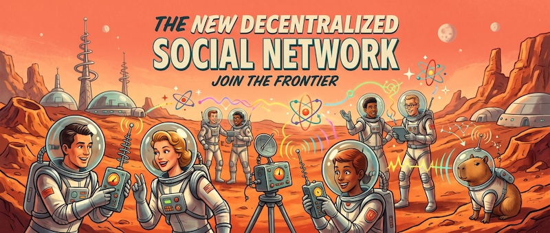

Atomic Micro Blogging
Social networking, split into its atoms.
Built entirely on Atom feeds and open web standards.
PUBLISH
Your posts live on your feed server, at your URL. Signed, so nobody can forge them.
AGGREGATE
Aggregators merge the feeds you follow into timelines. Pick one, switch any time.
PRESENT
Any frontend can read any aggregator. Web, app, CLI — your choice.
Source, spec and docs on GitHub
Early development. Go module: atomicmicro.blog